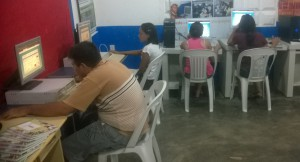
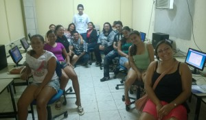
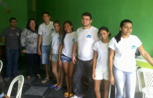

Projeto Telecentros Ceará já apresenta resultados positivos
Iniciado em 2013, o programa Telecentros Ceará é um projeto da Secretaria do Trabalho e Desenvolvimento Social do Ceará – STDS, executado pela ATN (Associação Telecentro de Informação e Negócios), de qualificação via Internet utilizando a Tecnologia WiLivro de Ensino Presencial Mediado por Elementos Didáticos Interativos EPM/EDI.
Os Telecentros são instalados com equipamentos doados pelo SERPRO – Serviço Federal de Processamento de Dados. Atualmente, estão instalados 15 telecentros, a meta é atingir 31 telecentros até o final do de 2014. Ao todo serão oferecidos 12.200 cursos na forma de Itinerário Formativo com formações nas áreas de Inclusão Digital, Apoio a Inserção no Mercado de Trabalho e Montagem de Pequeno Negócio.
“O projeto é a realização de um sonho, faço o que gosto e estou muito feliz de ver gente de todas as idades resgatando a autoestima, buscando um futuro melhor, além de enxergar em nossos cursos uma oportunidade de crescimento. Quando viajo para visitar, implantar, inaugurar e mobilizar, é muito gratificante. Só tenho a agradecer a todos que me confiaram essa missão”, afirmou a coordenadora do projeto da ATN, Maria Jose Pinheiro Gomes.
Acompanhe os resultados, experiências e registros dos telecentros em destaque:

{kind=link}
Telecentro Barreira – Trabalho em equipe é a palavra chave neste telecentro. O local estimula os alunos com sorteios e oferece prêmios atrativos. Vale ressaltar o apoio de múltiplos parceiros: Mesa Brasil, Sesc de Iparana e Programa Agricultura Familiar, entre outros.

{kind=link}
Telecentro Pereiro – Com o centro readequado, a ideia é que a nova unidade se torne referência no município.

{kind=link}
Telecentro de Itapiúna – O programa destaca-se na região por possuir salas de aulas lotadas. O que chama atenção é a postura e interesse dos estudantes, ao ponto de mandarem confeccionar a própria camiseta, que os identifica como participantes do projeto.